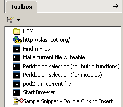
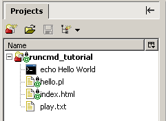
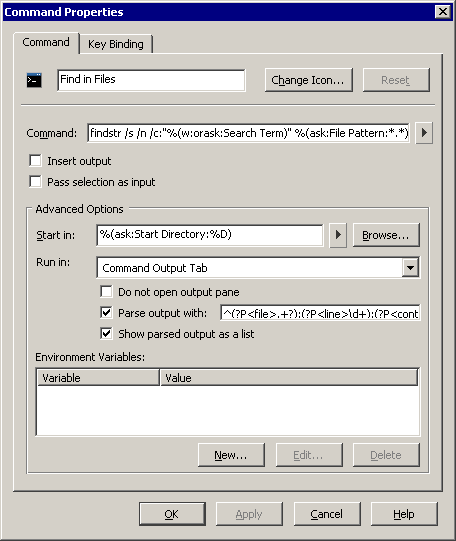
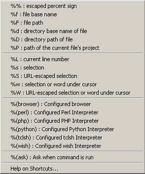
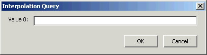
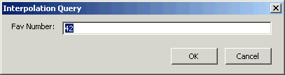
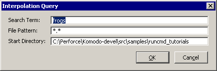

This tutorial introduces you to the Komodo Run Command
feature. You will learn how to run simple and complex custom
commands (such as grep, make, and
perl); use these commands to process and analyze
files; save commands to run with a single keystroke; and use
commands to make Komodo a more powerful editor. In this tutorial
you will:
On the File menu, click
Open|Project and select
runcmd_tutorial.kpf from the
\samples\runcmd_tutorials subdirectory of the Komodo
installation. All files included in the tutorial project are
displayed on the Projects tab in the
Left Pane.
The Komodo Run Command feature offers another way to run
commands that would otherwise be run on the system command line.
This section starts with a simple echo command.
echo Hello
World.Output from commands is displayed on the Command Output tab.
Use the Command Output tab to interact with commands; if the command accepts input, enter it directly into the command on the Command Output tab. The Command Output tab has the following features:
stderr (standard error
output) is displayed in red at the top of the Command
Output tab.The Toggle Raw/Parsed Output View button is discussed in the Parsing Command Output section of this tutorial.
Insert command output into a document using the Insert output option.
dir (on Windows) or ls -al (on
Linux).The Pass selection as input option passes selected text to the specified command. Use this option together with the Insert output option to filter selected regions of a document.
frog.sort (on Windows) or sort -n (on
Linux).Note that the Pass selection as input and Insert output options are selected automatically. If one or more lines are selected in a document, the Run Command expects to filter the selected lines.
Use the grep command line utility to filter lines
of text. Use grep to filter out all but the red
frogs from the list.
This tutorial assumes the grep utility is
installed on your system and is in your system's PATH. Grep is a
Linux utility that searches for text and characters in files.
Windows operating system users may not have a grep
installation. There are a number of free versions available on
the Web. Search using the keywords grep for
Windows.
grep red.Clicking the More button in the Run Command dialog box reveals a number of advanced options.
To set the current working directory for a command:
dir (on Windows), or ls -al (on
Linux).Specify which environment variables to set for a command. For
example, use this feature for setting PERL5LIB or
PYTHONPATH when running Perl or Python scripts.
set.PERL5LIBPERL5LIB (the actual value you choose does not
matter for this example). Click OK.PERL5LIB setting is
located.Run GUI programs outside of the Command Output tab by changing the Run in option to No Console.
mozillaiexplore or
notepad command.To run commands in a new console window:
dirSave frequently used commands for quick access and reuse.
Select Tools|Recent Commands to rerun recently run commands.

The Run Command dialog box contains an option for saving commands in the Toolbox for reuse. A command saved in the Toolbox is indicated with the icon.

echo Hello Worldecho Hello World is added to the Toolbox.echo Hello World to
rerun the command.Commands can also be stored in a Komodo Project.

For example, the Run Command Tutorial project includes a Command to echo "Hello World".
Consider adding commands to your projects to run
make or other command line tools. There are two ways
to add commands to a project:
Edit command properties in the Command Properties dialog box.

To open this dialog box, right click on any saved command and select Properties.
Run Command can use interpolation
shortcuts for putting filenames, directory names, paths and
other arguments into commands as variables. This creates commands
that are more generic and useful. Enter command shortcuts in the
Run and Start in fields, or select them from the drop-down lists
to the right of the Run and Start in fields. Windows users should
enclose all interpolation shortcuts (with the exception of
%(browser)) in double quotation marks to ensure that
spaces in filenames or file paths are interpreted correctly.
Click the arrow button to the right of the Run field to view a list of Run Command shortcuts.

The string %F in a command expands the full path
of the current file.
echo "%F"Change the current file status from "writable" to "read-only".
attrib +R "%F"chmod u+w "%F"To open a current HTML file in a Web browser, combine %F with the %(browser) shortcut.
%F in double
quotation marks.The %s, %S, %w and %W codes insert current selections, or the
current word under the cursor, into commands. This shortcut helps
when running utilities like grep, or for searching
the Web.
%(browser)
http://www.google.com/search?q="%W".Now that you have searched for a word or selection in Google, try the following shortcut to search for PHP methods.
mysql_info methods in the
file.%(browser)
http://www.php.net/manual-lookup.php?pattern=%S".mysql_info
methods in PHP's online manual.These two commands are built into Komodo. If the default key binding scheme is in effect, 'Ctrl'+'F1' ('Meta'+'Ctrl'+'/' on Mac OS X) starts a Google search for the current selection. 'Shift'+'F1' ('Meta'+'/' on OS X) in a Perl, Python or PHP file starts a help search appropriate for that language. Customize searches in the Preferences dialog box (Edit|Preferences|Language Help).
Run commands from the directory where the current file is
stored, rather then the current directory. For example, use the
command %(perl) "%F" to run the current file with a
configured Perl interpreter.
%(perl) "%F""%D"This example assumes a perl interpreter is configured on your
system. If a perl interpreter is not configured (the required
file is perl.exe), an error message displays at the top of the
Command Output tab. Alternatively, run the
command dir (Windows) or ls (Linux) to
display a list of files and folders beneath the current
directory.
Run Commands can prompt for specific input with a dialog box. These queries can be configured with default values and/or prompt the user if no value could be determined automatically (e.g. a command to search Google for the current selection that prompts for a search term if nothing is selected).
The %(ask) and %(askpass) shortcuts
always prompts the user for data. Other shortcuts can use the
orask modifier to prompt the user if no valid value
could be determined.
Windows users should enclose all Komodo shortcuts (with the
exception of %(browser)) in double quotation marks.
This is necessary to ensure that any spaces in filenames or file
paths are interpreted correctly.
The full syntax of %(ask) and
%(askpass) shortcut are:
%(ask[:NAME:[DEFAULT]]) %(askpass[:NAME:[DEFAULT]])where
NAME is an optional name to use when
prompting in the dialog box and DEFAULT is an optional
default value to place in the dialog box.
For example:
echo Your favorite number is "%(ask)"
Refine this shortcut by adding a more meaningful name than "Value 0" and a more appropriate default value.
echo Your favorite number is "%(ask:Fav
Number:42)"
Any Run Command shortcut can be modified to prompt the user for a value if one cannot be determined automatically. The full syntax of the modified shortcut is:
%(SHORTCUT:orask[:NAME])where
NAME is an optional name to use when
prompting in the dialog box.
In the previous step we created a shortcut to search for the selected word on Google with the command:
%(browser) http://www.google.com/search?q="%W"However, if nothing has been selected and there is no word under the cursor, the command fails. In this case, it would be better if the command prompted you for a search term.
%(browser)
http://www.google.com/search?q="%(W:orask:Search
for)"Use Run Commands to specify a regular expression to parse filename and line number information from lines of output. The parsed results are displayed in a table to quickly identify the desired file. Explore this usage by creating a "Find in Files" command later in this section.
Output from a run command can be parsed with a Python regular expression and displayed in the Command Output tab as a list.
|
Komodo Tip: Use the Komodo Rx Toolkit to build, edit, or test regular expressions. New to regular expressions? The Regular Expressions Primer is a tutorial for those wanting to learn more about regex syntax. |
Named groups in Python regular expressions (e.g.
(?P<name>pattern) ) can be
used to sort match data. The names 'file', 'line', 'column' and
'content' can be used as column titles in Parsed Ouptut mode,
with the matching text displayed in the columns under the
names.
For example, the output of the "Find in
Files" example below contains the following:
hello.pl:5:print "Hello, frogs!\n";
Output lines are of the form:
<file>:<line>:<content>
An regular expression to match the important elements of this line could be:
(.+?):(\d+):(.*)
However, to view this information as a useful list, we need to define the column headings by naming the groups:
(?P<file>.+?):(?P<line>\d+):(?P<content>.*)
When parsing the run command output, Komodo determines that
hello.pl is the file, 5 is the
line and print "Hello, frogs!\n"; is the
content, and displays the output sorted into the
appropriate columns:
Parts of the output that match outside the named groups in the regular expression (e.g. the ":" delimiters seen above) are visible when viewed as raw output, but are hidden when viewed as a list. You can use this technique to filter out extraneous information when viewing output as a list.
For example, if you were not interested in viewing the line number of the match, you could change the regular expression to the following:
(?P<file>.+?):\d+:(?P<content>.*)
Komodo can use the information from the 'file' and 'line' groups to open a file in an editor tab at a particular line (see below).
Create a "Find in Files" command using all information presented in this tutorial.
findstr /s /n /c:"%(w:orask:Search Term)" "%(ask:File
Pattern:*.*)"find . -name "%(ask:File Pattern:*)" | xargs -l grep
-nH "%(w:orask:Search Term)"Note that findstr is a Windows command line utility that searches for strings in files.
%(ask:Start Directory:%D)%D as the default value).^(?P<file>.+?):(?P<line>\d+):(?P<content>.*)$
Alternatively, double-click on lines in the raw output view to jump to that file and line.